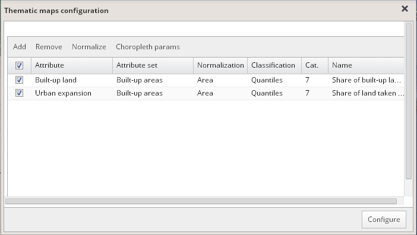
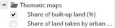
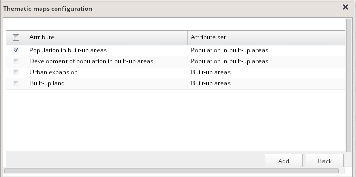
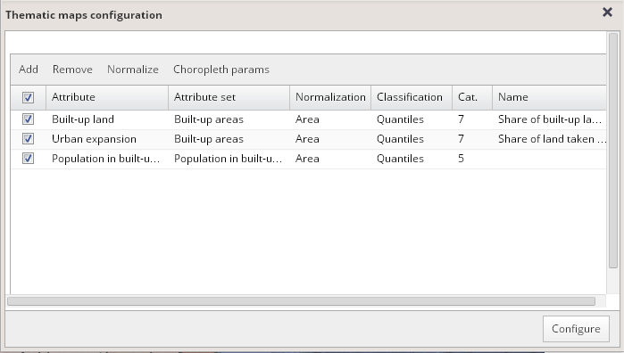
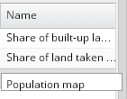
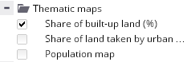
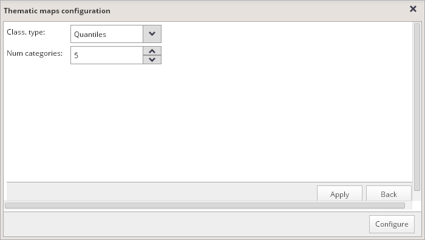
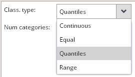
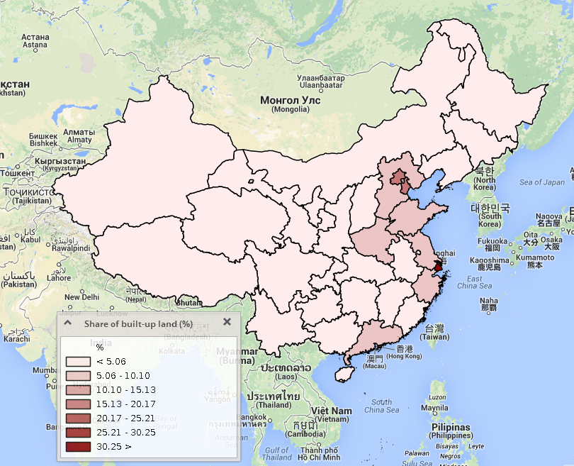
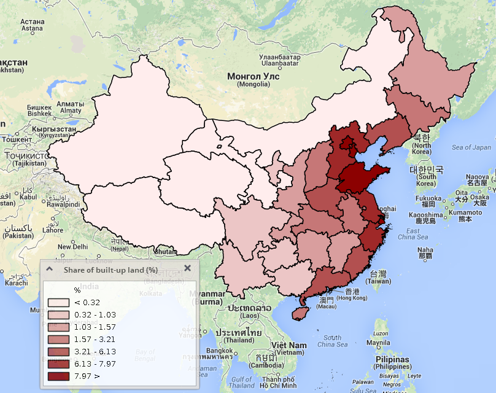

Modifying thematic maps properties
You can modify thematic maps in the "Thematic maps configuration" dialog window, which is available after clicking the "Configure thematic maps" button located at the top of the map layers panel.

This window is intended for configuration of the list of attributes that will be shown in the form of thematic maps in the visualization.
Attributes can be added to the list, removed from it or normalized via this dialog.
Attributes can be added to the list by clicking the "Add" button at the top of the window. After performing this action, a list of all attributes available in the currently edited visualization appears:

Check boxes in front of attributes that should be added to the list and click the "Add" button in the lower right corner of the dialog.
Selected attributes will be added to the list as follows:

Each row in this list will be represented by a single thematic map displayed in the currently edited visualization.
Edit the title of the map by typing it into the "Name" column in the table:

Click the "Configure" button in the lower right corner of the window to confirm modifications in thematic maps settings.
After that, a new thematic map will be added to the list of thematic maps in the map layers panel:

Parameters of each thematic map can be configured using the following dialog, accessible via the "Choropleth params" button at the top of the "Thematic maps configuration" card.

You can select the type of classification scheme and set the number of intervals:

Equal:
This scheme divides the range of attribute values into equal-sized subranges, while it allows you to specify the number of intervals.

Quantiles:
Each class contains an equal number of features. This classification is suitable for linearly distributed data.

Continuous:
This scale gives unique color to each unique value between a minimum and maximum value in the sample.